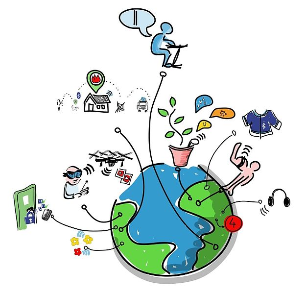
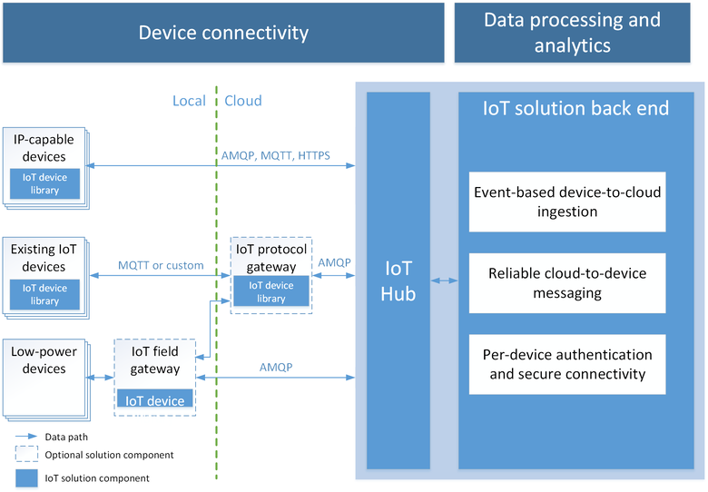
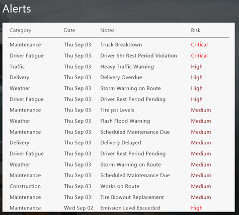
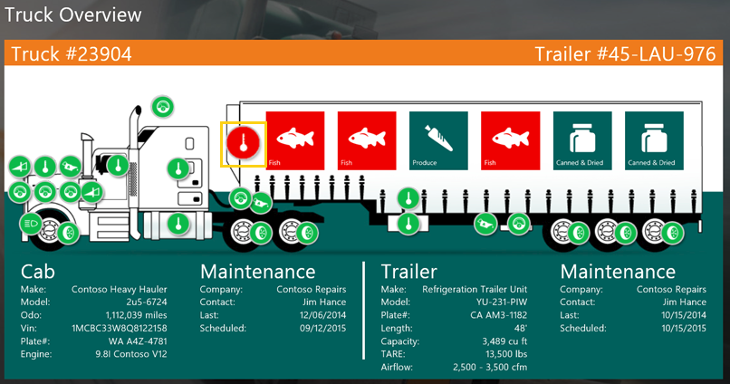
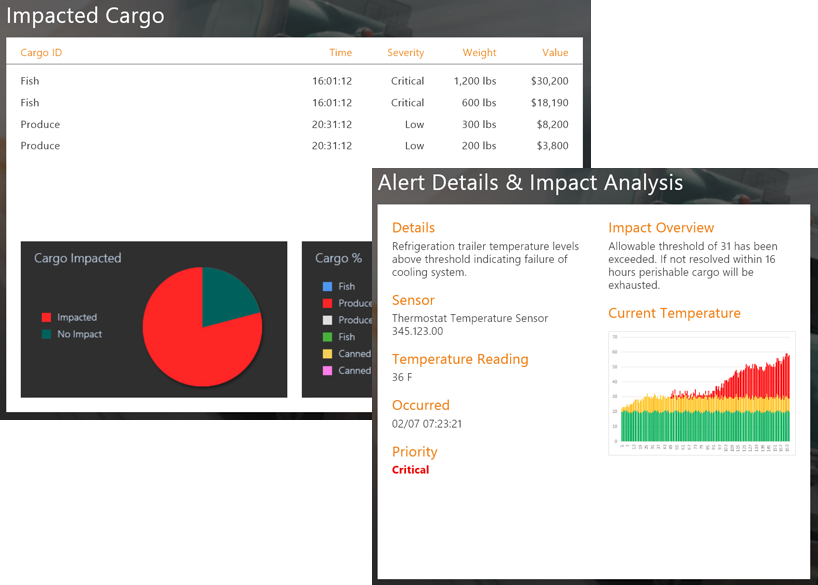
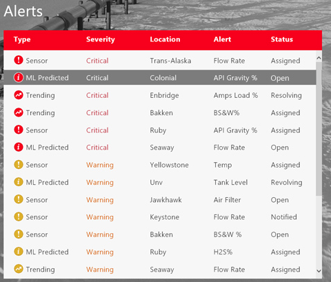
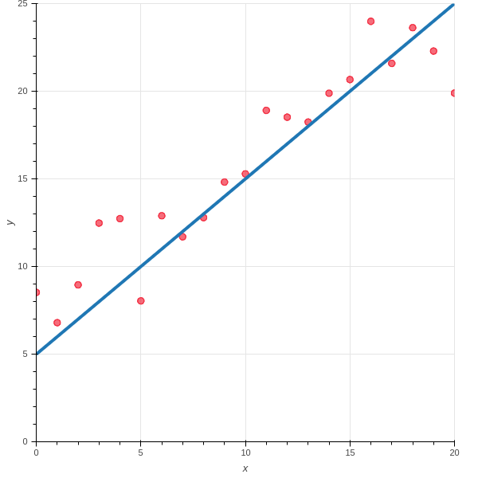
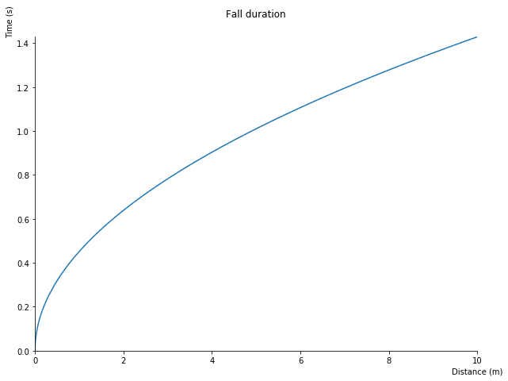

OpenSistemas | www.opensistemas.com
IoT y machine learning en Azure
Miguel Sánchez de León Peque
2017-06-02
IoT
What is it?
Internetworking of devices collecting and exchanging data

How does it look like?
Internet
Things Things Things Things Things Things Things Things Things Things Things Things Things Things Things Things Things Things Things Things Things Things Things Things Things Things Things Things
How many?
Billions in the following years (tens of billions by 2020)
- Data producers
Azure
Integrated solution
- Infraestructure
- Scalability
- Availability
- Real-time data processing
- Real-time visualizations (graphs, maps)
- Alerts
- Predictions
- Security

Advantages
- State synchronization
- Per-device authentication
- Route device-to-cloud messages to Azure services
- Monitoring
- Protocols: MQTT, HTTP, AMQP
- Scale
Example: fleet management

Operations map
- Assets tracked/monitored in real-time
- Health status and trip/destination information
- Alerts escalated for attention for immediate action

Alerts
- Displayed as a list
- Easily filter by severity or any other metric
- Categories: maintenance, weather, predictive…
- Click to take action

Asset status
- Real-time sensor and device data
- Click for current reading and historical information

Asset data
- Current reading
- Compare to historical data
- Warning thresholds
- Predicted readings

Alert resolution
- Details about the alert
- Details about the failing part
- Business impact information
- Take action


Example: rockwell automation



Cognitive Services APIs
What are Cognitive Services?
- REST based API
- The language you like
- The tools you like
Types
- Vision
- Knowledge
- Speech
- Language
- Search
Vision
- Computer vision
- Content moderator
- Emotion
- Face
- Video
Example
Uber
Speech
- Bing speech
- Custom speech service
- Speaker recognition
Language
- Bing spell check
- Language understanding
- Linguistic Analysis
- Text Analysis
- Translator
Search (Bing)
- Autosuggest
- Image
- News
- Video
- Web
Fun!
Machine Learning
The line equation
A simple equation:
y = x + 5
Ease to calculate y for different values of x.

The inverse problem
We do not have the equation:
y = h(x) ?


What is machine learning?
It is a way to make sense of the data (which can be interpreted in different ways).



The trade-off
- Bias vs. variance
- Abstraction vs. specificity
- Underfit vs. overfit
Linear Regression
Model
h = w_0 + w_1 x_1 + w_2 x_2 + ... + w_D x_D
- Simple
- Closed-form solution (D\downarrow)
- \nabla RSS easily computable
Example
How much time does an object take to free-fall down to the floor?
t \approx 0.451754 h^{-1/2}

Meet Azure Machine Learning Studio
- Upload a dataset
- Visualizing a dataset
- Opening a dataset with a notebook
- Descriptive statistics
- Split data
- Train model (linear regression)
- Score model
- Evaluate model
- Publish model as a service